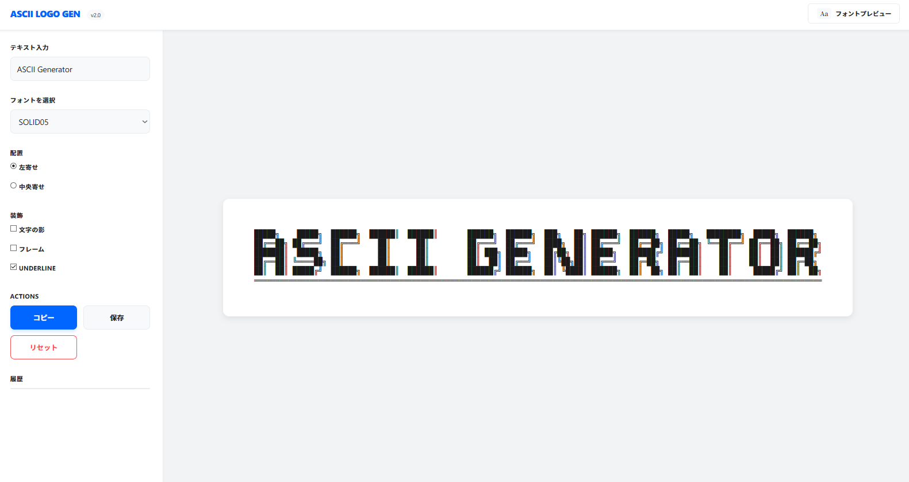
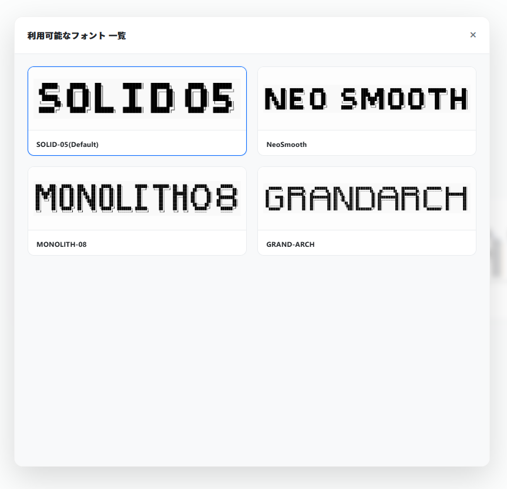

入力したテキストをアスキーアート形式のロゴに変換するツールです。
このツールは、複数の行で構成された特殊なフォントデータ（アスキーフォント）を使用して、入力文字列を変換します。 プログラムのヘッダーコメントや、ターミナルの表示用ログなどに利用することを目的としています。

サイドバー上部の「テキストを入力」欄に文字を入力します。リアルタイムでプレビューが更新されます。
「フォントを選択」プルダウン、またはヘッダーの「FONT LIBRARY」からフォントを切り替えることができます。 現在、5行構成および8行構成の複数のバリエーションが利用可能です。

生成されたロゴをクリック、または「COPY」ボタンを押すことでクリップボードにコピーできます。
みずほ / Mizuho
このツールの設計・開発および、一部フォントデータのデザインを担当。